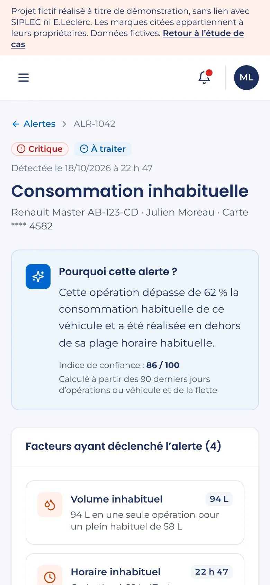
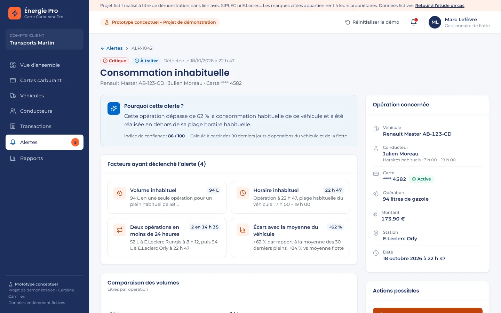

Gestion de flotte : détecter et traiter une consommation anormale
Un espace web pour le gestionnaire de flotte d'une entreprise cliente d'une carte carburant professionnelle : repérer une anomalie, la comprendre et agir depuis le même écran.
- Livrable
- Une note de cadrage et un prototype cliquable d'espace gestionnaire (sept rubriques)
- Réalisé avec
- Gamma pour la note de cadrage, Claude Code pour le prototype
- Livraison
- Prototype publié en une journée
1Le contexte
L'offre explorée est une carte carburant professionnelle et ses services en ligne pour les entreprises. J'ai d'abord cartographié l'écosystème, puis dégagé quatre axes d'évolution. J'en ai retenu un pour le prototyper : le pilotage de la flotte.
Ce sont des hypothèses construites à partir d'informations publiques, à confronter aux services existants, aux utilisateurs et aux données. Il ne s'agit pas d'une commande.
La cartographie de l'écosystème
- Acteurs : entreprises clientes, gestionnaires de flotte et comptables, conducteurs, équipes internes, stations et partenaires.
- Parcours : souscription et gestion des comptes, commande et paramétrage des cartes, suivi des consommations et des transactions, facturation et reporting, assistance et incidents.
- Pilotage produit : vision, discovery, roadmap et backlog, coordination avec les métiers, la tech, la data et l'architecture, recette et amélioration continue.
Les quatre axes d'évolution et l'axe retenu
- Simplifier et sécuriser le selfcare : souscription guidée, gestion autonome des cartes et des droits, blocage immédiat. Valeur recherchée : plus d'autonomie, moins de sollicitations du support.
- Renforcer le pilotage de la flotte : tableau de bord, suivi des dépenses et des plafonds, alertes sur les transactions inhabituelles. Valeur recherchée : mieux contrôler les dépenses et repérer les anomalies.
- Connecter la plateforme aux outils des entreprises : exports comptables, API vers les logiciels de gestion, rapprochements automatisés. Valeur recherchée : moins de tâches manuelles.
- Préparer une expérience multi-énergies : carburant et recharge électrique dans une même vue, bornes compatibles, indicateurs RSE. Valeur recherchée : accompagner la transition des flottes.
Le prototype porte sur l'axe 2, avec un geste de l'axe 1 : la suspension immédiate d'une carte depuis l'alerte.
2Le problème et la cible
La cible est le gestionnaire de flotte d'une PME. Il veut repérer vite une consommation de carburant inhabituelle, en comprendre l'origine et agir tout de suite, sans parcourir plusieurs tableaux ni appeler le support.
Les constats supposés, à valider en discovery
- Les anomalies sont repérées tard, souvent à réception du relevé mensuel.
- Les analyser oblige à croiser transactions, véhicules et conducteurs dans plusieurs écrans ou exports.
- Bloquer une carte passe souvent par un appel au support, ce qui retarde la mesure.
- Les décisions prises ne sont pas toujours tracées, ce qui complique le dialogue avec les conducteurs et la direction.
3Ma démarche avec l'IA
J'ai rédigé une note de cadrage en sept pages avant de prototyper : écosystème, méthode de travail, démarche de discovery et pistes d'évolution. Claude Code a ensuite construit le prototype autour d'un principe simple : données, décision, action, traçabilité.
Le brief
La note de cadrage pose une démarche de discovery en quatre temps :
- Explorer : écouter les métiers, analyser les usages, repérer les besoins non couverts.
- Qualifier : clarifier le problème, estimer la valeur client et business, prendre en compte les risques.
- Tester : formaliser les hypothèses, prototyper, confronter aux utilisateurs et aux équipes techniques.
- Prioriser et mesurer : comparer valeur, effort et dépendances, définir les indicateurs avant le développement.
Le prototype correspond à l'étape « Tester ». Pour le construire, j'ai transmis à Claude Code mon analyse de product owner et de cheffe de projet digital, traduite en prompt.
Itérations, corrections et refus
Le prototype a été publié en trois livraisons sur une journée : le prototype complet, sa mise en ligne, puis un ajustement de l'en-tête. Pour ce portfolio, la version présentée ne contient aucun logo de marque.
Ce que j'ai demandé de corriger : une interface plus compacte, plus claire et plus simple à utiliser, aux couleurs de la marque.
Les vérifications
- Données : entreprise, personnes, immatriculations, cartes, montants et indicateurs sont inventés. Le prototype ne se connecte à aucune base ni à aucun service externe.
- Actions : suspension, SMS et signalement sont simulés et se remettent à zéro au rechargement. Un bouton « Réinitialiser la démo » permet de rejouer le parcours.
- Démonstration : un déroulé de trois minutes est documenté pour présenter le parcours de bout en bout.
4Le livrable
Un prototype cliquable pour une entreprise fictive de transport : 24 cartes, 18 véhicules. L'alerte prioritaire remonte d'elle-même sur le tableau de bord, et le gestionnaire va de l'analyse à la suspension de la carte en quelques clics.


Le parcours démontré, étape par étape
- Tableau de bord : cartes actives, véhicules, consommation, budget, évolution, répartition par énergie (gazole, SP95-E10, E85, recharge électrique) et alerte prioritaire.
- Alerte : consommation inhabituelle sur un utilitaire, bouton « Analyser l'alerte ».
- Liste des alertes : cinq types d'anomalies, niveaux de priorité et filtres.
- Détail de l'anomalie : explication en langage clair, quatre facteurs déclencheurs, graphique comparatif et dernières opérations du véhicule.
- Suspension temporaire de la carte : fenêtre de confirmation, durée au choix, motif facultatif.
- Confirmation et traçabilité : statut « Suspendue » répercuté partout et entrée horodatée dans le journal d'activité.
Les rubriques Cartes, Véhicules, Conducteurs et Transactions sont consultables. La rubrique Rapports esquisse des services additionnels : pilotage budgétaire, règles d'usage, empreinte carbone, comparaison entre flottes.

5Ce que le cas démontre
- Discovery et cadrage : cartographier un écosystème B2B, formuler des axes d'évolution et leur valeur attendue.
- Choix d'un périmètre : retenir un axe et le traduire en un parcours testable de bout en bout.
- Conception orientée action : une alerte expliquée, une action possible tout de suite, une décision tracée.
- Lecture business : valeur potentielle pour le client (moins de pertes, moins de temps passé) et pour l'offre (différenciation par le service, moins de sollicitations du support), présentée comme hypothèse.
6Limites et suites possibles
La détection d'anomalies est simulée et l'indice de confiance est inventé. Le prototype n'a été testé avec aucun gestionnaire de flotte. Je ne connais pas les services déjà proposés ni les contraintes du système d'information.
Les suites à donner
- Confronter le prototype aux services existants et à des gestionnaires de flotte.
- Cadrer avec la tech, la data et l'architecture : flux de transactions, règles de détection, gestion des fausses alertes, blocage réel d'une carte.
- Définir les indicateurs avant toute expérimentation : délai entre une transaction anormale et l'action, part des alertes traitées en libre-service, part des alertes jugées pertinentes, appels au support évités, usage hebdomadaire de l'espace.
- Prioriser les services additionnels selon la valeur, l'effort et les dépendances.